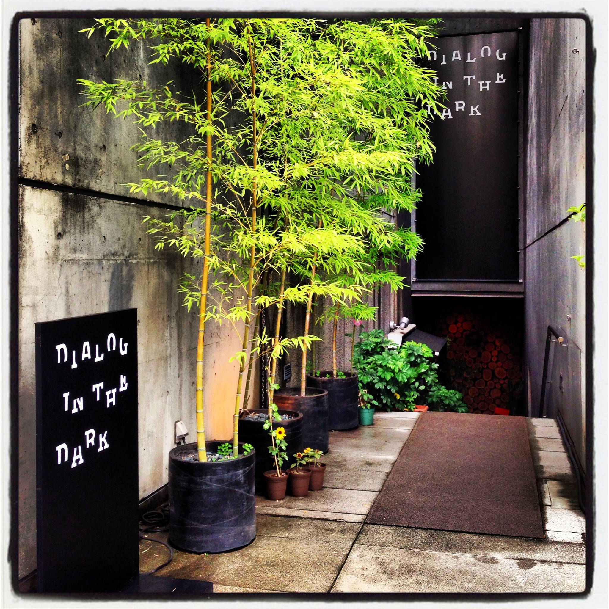
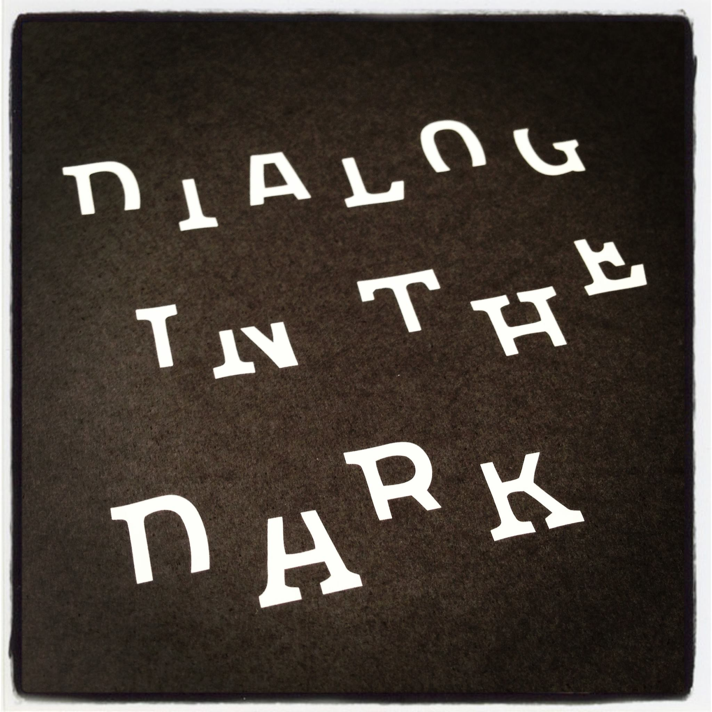

01
本当の暗闇
入口のロッカーで、携帯電話や時計など、光るものをすべて預けた。
渡されたのは、一本の白杖。そして扉が開いた。
部屋へ一歩入った瞬間、私は言葉を失った。目を開けても、閉じても、何も変わらない。
夜の道とも違う。停電した部屋とも違う。星明かりも、街灯も、非常灯もない。
前も後ろも、右も左も分からない。人生で初めて経験する、完全な暗闇だった。
目を開けても、
閉じても、
同じだった。
人生で初めて、
本当の暗闇を知った。
Experience Menu 100 / Hall of Fame
見えていなかったのは、世界ではない。
人の価値と信頼を、暗闇の中で学んだ約90分。
Opening
人生には、楽しい体験と、人生を変える体験がある。
Dialog in the Darkは、私にとって間違いなく後者だった。
体験時間は、およそ90分。しかし、私の感覚では半日ほど過ごしたように感じられた。
それほど多くの「初めて」が、短い時間の中に詰まっていた。
Threshold


入口のロッカーで、携帯電話や時計など、光るものをすべて預けた。
渡されたのは、一本の白杖。そして扉が開いた。
部屋へ一歩入った瞬間、私は言葉を失った。目を開けても、閉じても、何も変わらない。
夜の道とも違う。停電した部屋とも違う。星明かりも、街灯も、非常灯もない。
前も後ろも、右も左も分からない。人生で初めて経験する、完全な暗闇だった。
最初の数分間、私は歯を食いしばって、何とか見ようとしていた。
しかし、どれだけ目を凝らしても何も見えない。ほんの少しの段差さえ怖かった。
転びたくない一心で、這いつくばり、手と指で床を探った。
やがて私は、その場にへたり込んでしまった。立つことすらできなかった。
あの瞬間、私は自分がどれほど視覚に依存して生きてきたのかを思い知らされた。
すると、前を進んでいた全盲の男性ガイドが、私の異変に気づいて戻ってきてくれた。
声が近づいてくる。私は安心すると同時に、信じられないほど驚いた。
彼は、走って戻ってきたのだ。
私は一歩も動けない。立つことすら怖い。それなのに彼は、漆黒の暗闇の中を自由に移動している。
見える人が強者で、見えない人が弱者なのではない。強さとは、その環境の中で人を導けることなのだ。
暗闇の中では、彼は圧倒的に頼もしい存在だった。
私は、本当にすがる思いでお願いした。
彼は、ためらうことなく手を差し出してくれた。その手を握った瞬間、驚くほど安心した。
何も見えるようになったわけではない。出口が分かったわけでもない。それでも歩けるようになった。
人は、光があるから安心するのではない。信頼できる人がそばにいるから、前へ進めるのだ。
気持ちが落ち着くと、不思議なことが起きた。視覚以外の感覚が、急に立ち上がった。
枯葉の匂いがする。ガイドに伝えると、「よく気づきましたね。ここは公園なんです」と答えてくれた。
耳を澄ますと、かすかに水の音も聞こえた。ちょろちょろと、水が流れている。
「水の音がします」「噴水があるんですよ」
見えていないのに、世界は消えていなかった。私は、匂いと音で公園を感じていた。
ガイドが言った。「コニタンさん、ブランコに乗りましょうよ」
何も見えないのに、ブランコに乗るのか。危ないのではないか。
しかし、ガイドがいる。その安心感があった。私は、やってみようと思った。
大人になってから、何十年ぶりかのブランコだった。揺れ始める。風を感じる。身体が浮く。
驚くほど爽快だった。本当に、馬鹿馬鹿しいほど楽しかった。
信頼があると、人は防御をやめ、挑戦できる。そして、忘れていた遊び心まで取り戻すことができる。
次は、真っ暗闇の中で、てるてる坊主を作った。
布をハサミで切る。手探りで形を整える。顔を描く。見えなければ無理だと思っていた作業ばかりだった。
出口で完成品を受け取ると、ちゃんと顔が描かれていた。
その時、私は思った。人間は、できるからやるのではない。
必要な状況に置かれた時、工夫しながら、できるようになっていくのだ。
最初は、あれほど恐ろしかった暗闇。しかし途中から、暗闇は不思議なほど安心できる場所に変わっていた。
そこでは、誰も私を見ていない。顔も、服装も、体型も、肩書きも関係ない。
私は経営者でもなく、営業マンでもなく、誰かに良く見せる必要もなかった。ただそこにいる、一人の人間だった。
見た目で評価されないことは、想像以上の解放感だった。
暗闇の中で得た安心は、光のない安心ではない。評価のない安心だった。
最後に、暗闇の中のカフェへ立ち寄った。お酒も注文できるというので、私は梅酒を頼んだ。
すると、面白いことが起きた。梅酒が運ばれてくる前に、その香りで自分の注文が近づいていると分かったのだ。
グラスに触れる前だった。声をかけられる前だった。梅の香りが、先に届いた。
グラスの冷たさ。梅の香り。氷がグラスを鳴らす音。
普段は気にも留めないことが、一つひとつ新鮮だった。視覚がなくても、世界はこんなにも豊かだった。
カフェの女性スタッフが、とても魅力的だった。
顔は見えない。年齢も分からない。服装も分からない。
しかし、言葉、やり取り、気遣い、声の表情から、その人が本当にチャーミングな女性だと感じられた。
仮に明るい場所へ一緒に出て、その人の外見が自分の好みではなかったとしても、私が感じた魅力は変わらないだろう。
人の価値は、見た目だけでは決まらない。当たり前の言葉ではある。しかし私はあの日、初めてそれを身体で理解した。
体験時間は、およそ90分だったと思う。しかし私の感覚では、半日ほど過ごしたように感じられた。
暗闇に入る。怖くてへたり込む。暗闇の中を走るガイドに驚く。手をつないでもらい、人のぬくもりに安心する。
枯葉の匂いと噴水の音に気づく。ブランコに乗る。てるてる坊主を作る。梅酒の香りを感じる。
見た目が分からない人の魅力に気づく。短い時間の中で、何年分もの「当たり前」が壊れた。
人生でここまで濃密な体験は、ほとんどない。
Final Reflection
Dialog in the Darkで、見えなくなったのは視覚だった。
しかし、本当に消えたのは、それだけではない。肩書き。外見。評価。思い込み。「見える人が強く、見えない人が弱い」という前提。
それらが、暗闇の中で一度リセットされた。そして最後に残ったのは、人間そのものだった。
人は弱い。しかし、人は驚くほど適応する。人は一人では怖い。しかし、信頼できる誰かがいれば前へ進める。
人生で一つだけ、価値観を変える体験を薦めるなら、私は迷わずDialog in the Darkを挙げる。
開催内容や会場は変わることがあります。最新情報は、Dialog in the Darkの公式サイトで確認してください。
Dialog in the Dark 公式サイトを見るQuestions
完全な暗闇の中を、視覚に頼らず少人数のグループで進む体験型エンターテインメントです。視覚障害のあるアテンドの案内で、約90分かけて暗闇の世界を旅し、五感と人との対話を取り戻します。
約90分です。短い時間ですが、体感としては半日に相当するほど濃密だと感じる人が多い体験です。
このページは2013年の外苑前会場での体験記です。現在、Dialog in the Dark は東京・竹芝の常設会場「対話の森」で体験できます。最新の開催情報は公式サイトでご確認ください。